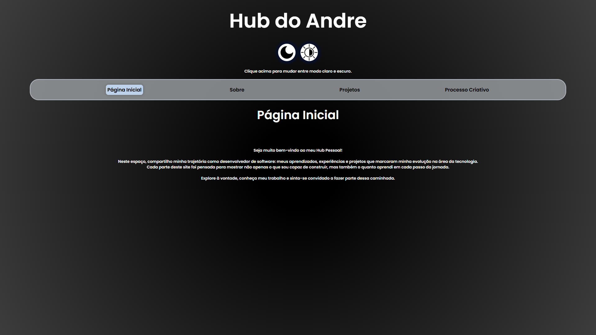
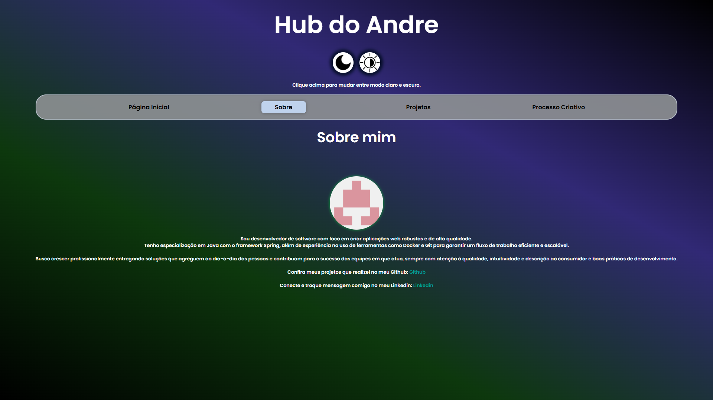
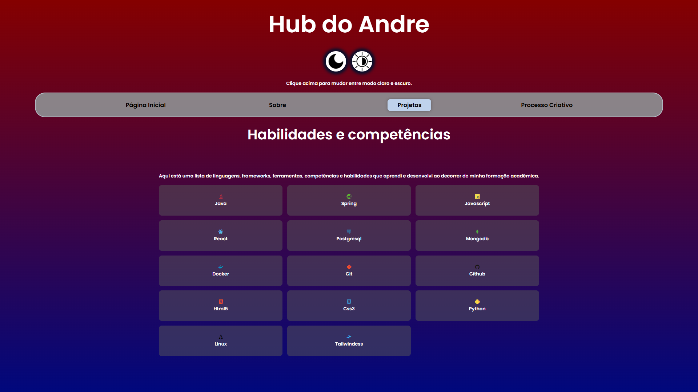
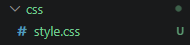
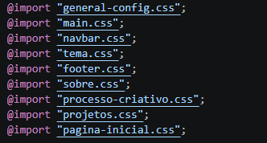

- 1 - Criar um portfólio como projeto pessoal para alavancar a minha experiência como desenvolvedor.
- 2 - Utilizando como base as seguintes ideias:



- 3 - Como ponto de partida, decidi alterar as ordens dos elementos e estilos dos elementos e containers, por uma razão puramente estética. Uma repaginada completa que consiga comportar tudo.
- 4 - Evitei a utilização de divs desnecessárias, tags semânticas, utilizar classes e ids de forma eficiente
- 5 - A utilização de um único arquivo para englobar todos os elementos acaba sendo massante e posteriormente, ele escalonará e terá muitos elementos das páginas dentro de um único arquivo, dificultando a eficiência. Portanto, usufrui do artifício de Single Responsability Principle ( SRP ), o que melhorou a eficiência e consegui corrigir erros mais rápido.


- 6 - O Javascript é uma ferramenta fundamental dentro dessa página, ele conseguir coordenar todos os botões de navegação sem eu precisar repetir o código em todos os html, e em suma ele virou e se comportou como um componente.
Implementação de uma tela de carregamento, para que a alternância entre as páginas seja sutíl, logo utilizando uma função assíncrona para tal feito, eu consegui atingir o objetivo.
Tratamento de erros também! É essencial caso a página não carregasse, ou o formulário de contato não enviasse.
Utilizei também ferramentas externas: EmailJS para o envio do formulário para o meu email, e o Recaptcha para evitar robôs e bots de fazerem spam.